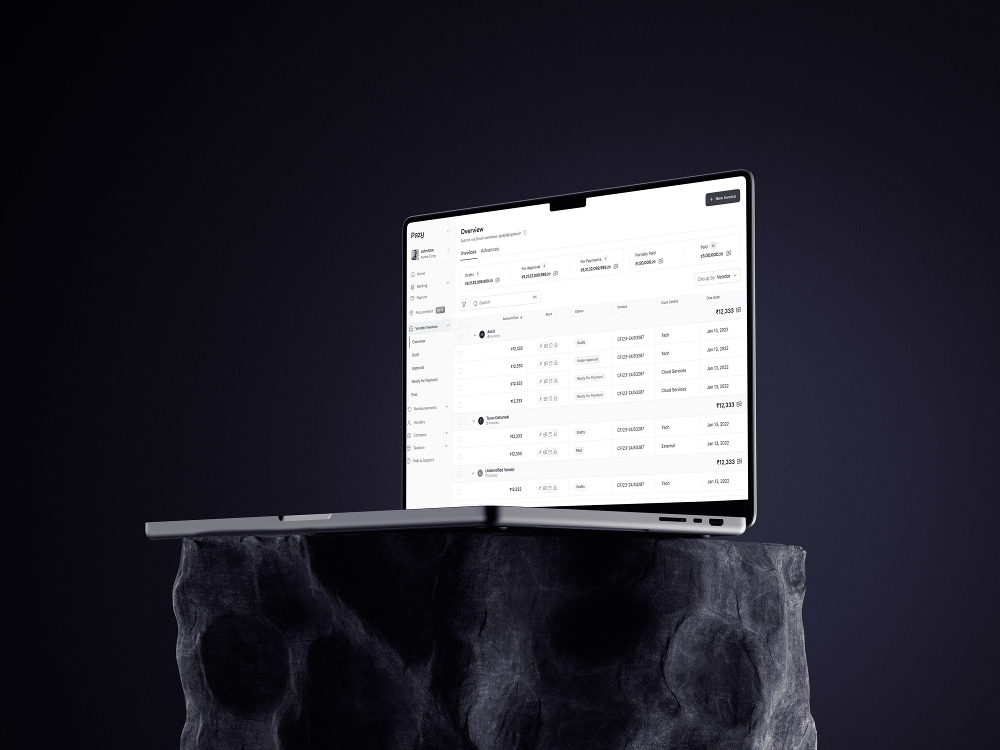
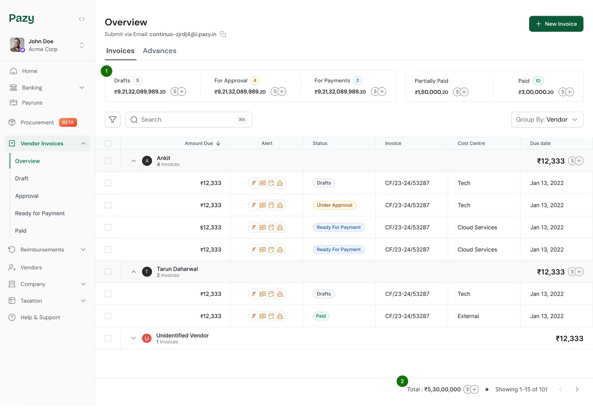
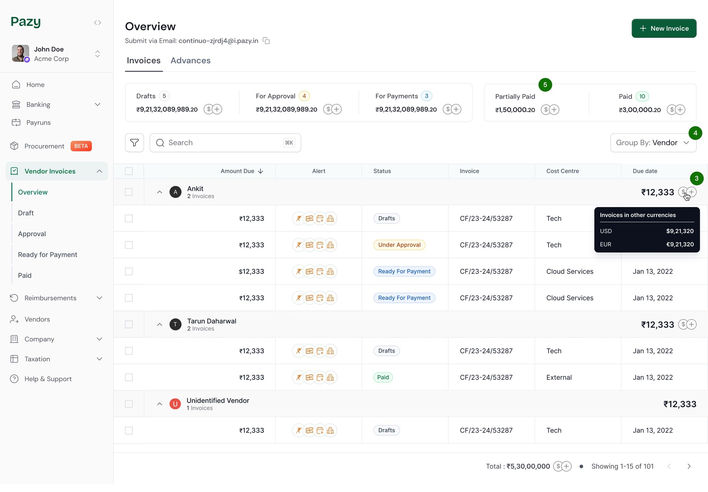
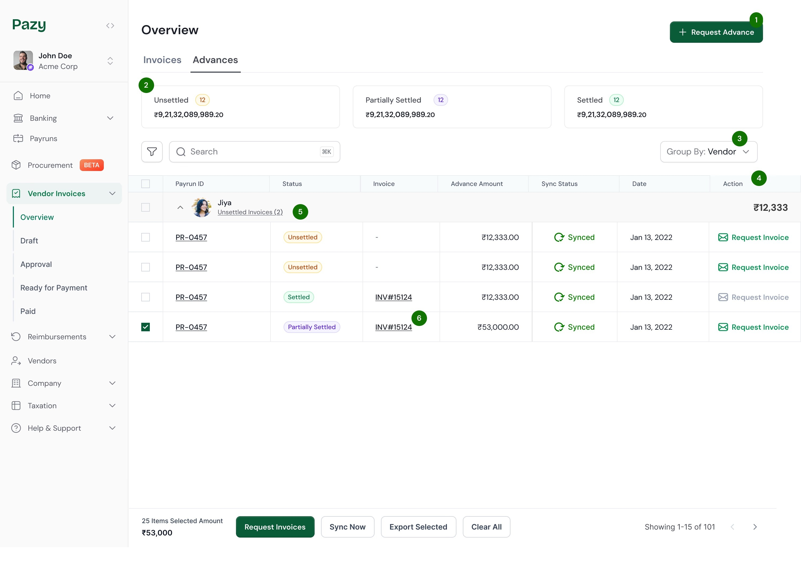
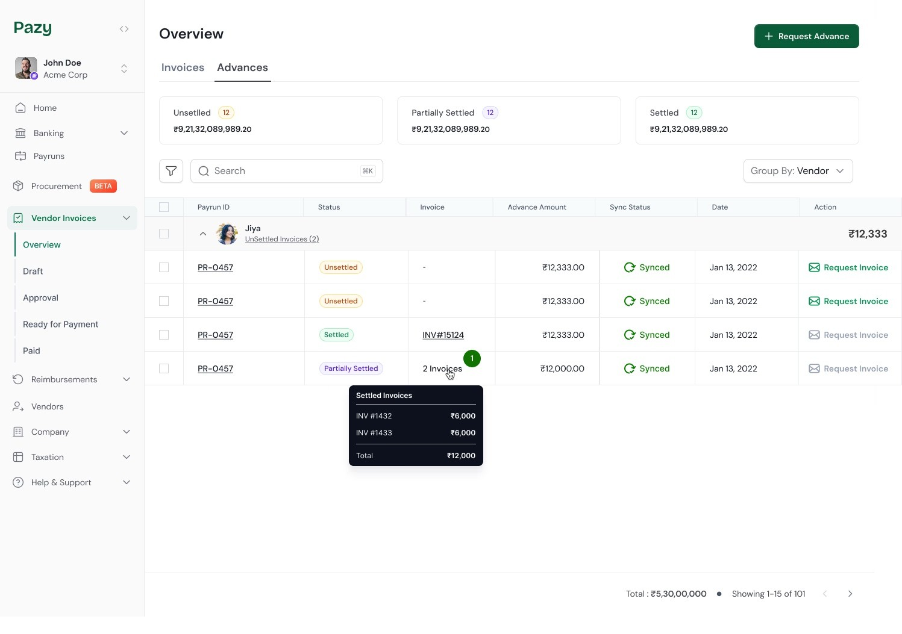
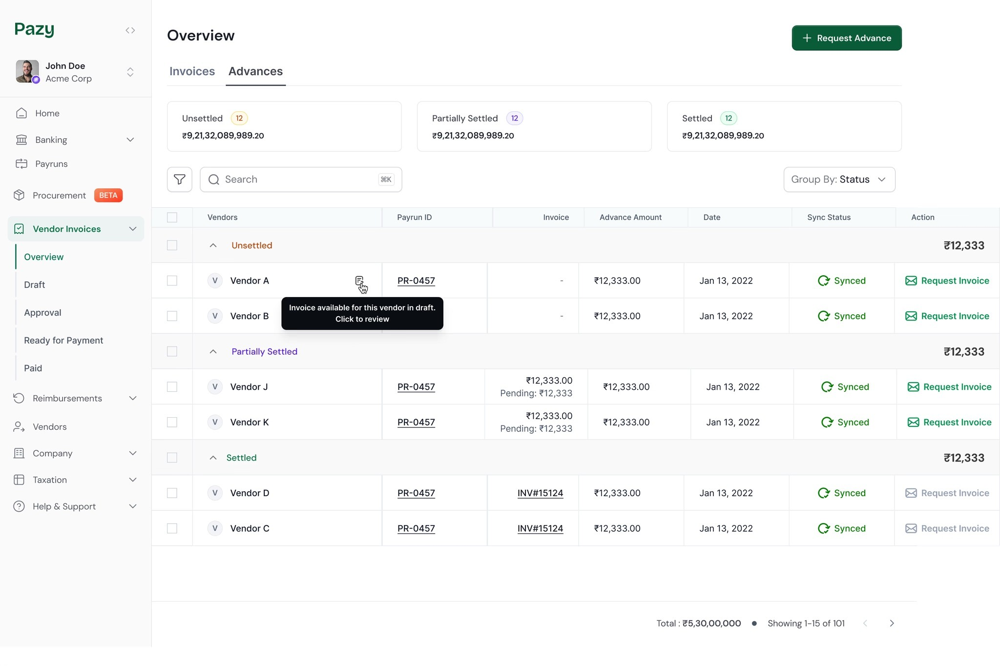
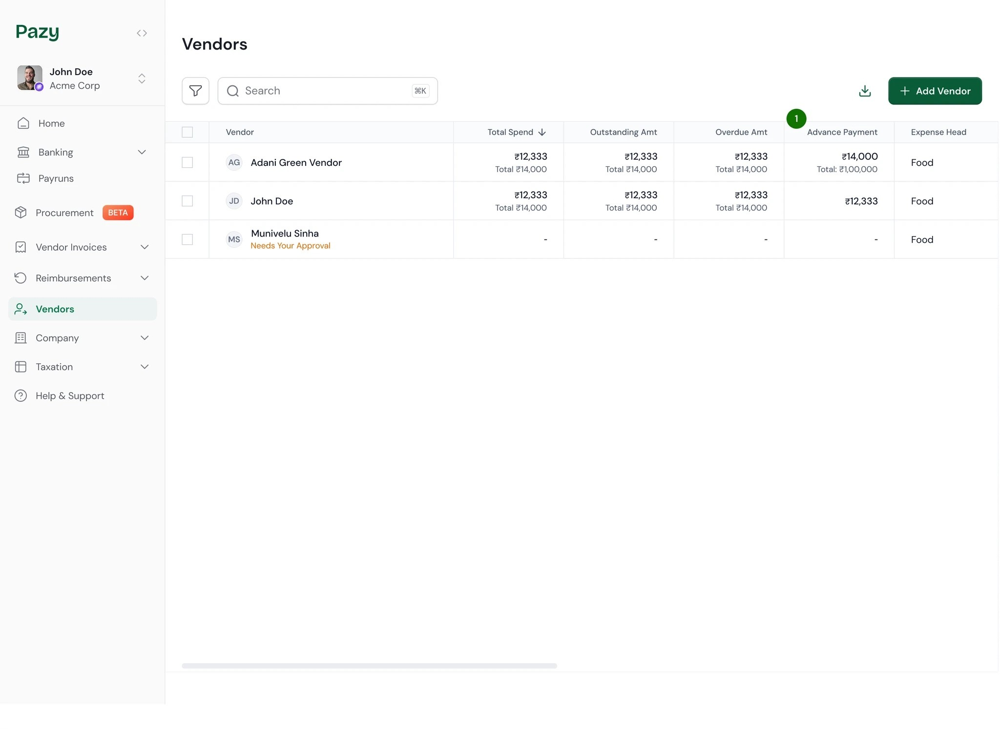
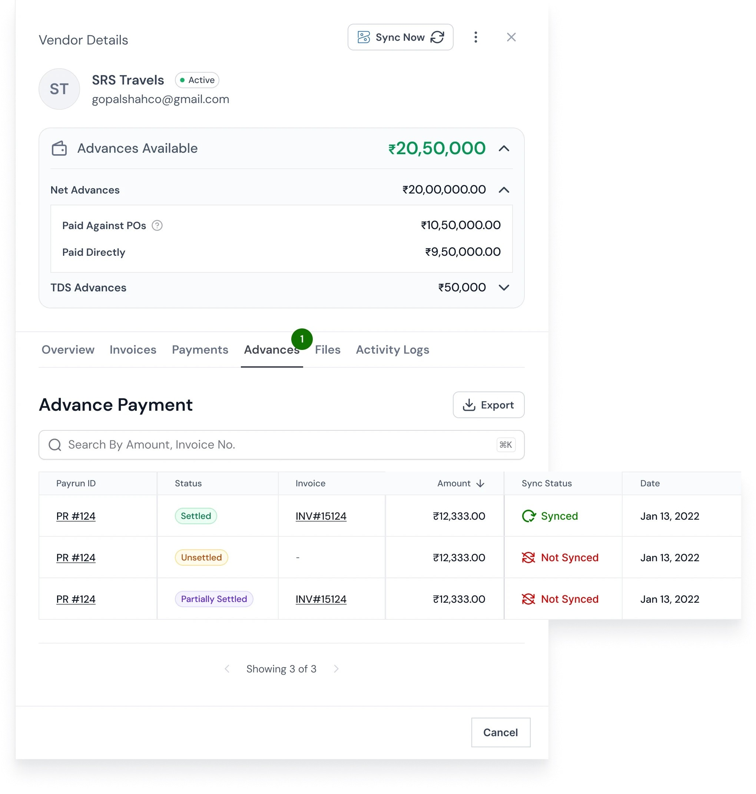

Bringing visibility to ₹50Cr+ in vendor payments.
Finance teams at Pazy's customers were managing tens of crores in invoices and vendor advances — but the system showed only fragments of the picture. So they kept an Excel sheet on the side. We replaced that Excel sheet, and ~70% of finance users started opening the new overview every day.

First, a quick word about Pazy.
Pazy is a B2B fintech platform for finance teams at mid-to-large Indian companies. From inside one tool, they upload vendor invoices, get them approved, manage their vendor list, and run the actual payouts.
On paper the loop looked clean. In practice, two parts of it had quietly slipped out of the product and into spreadsheets. Invoices moved through several stages — uploaded, approved, ready to pay, paid — and nowhere did a finance manager get to see all four at once. Sitting beside that was a quieter problem: vendor advances — money paid to a vendor before an invoice exists, against a future or already-running engagement. Whether those advances ever got settled, and against which invoices, was the kind of thing accounts teams tracked in Excel, because the system didn't.
I worked with the PM and one developer to design a unified overview that surfaced both invoices and advances in one place. Design + reviews took roughly two weeks; the adoption numbers below were captured about a month after launch.
Two missing overviews, one root cause.
On the surface these looked like two different problems. Sitting with finance managers, they were the same one — nowhere in the product could you see the whole picture at a glance. That gap showed up in two places: across invoices, and across vendor advances.
1 · Invoices were scattered across stages
Invoices moved through several stages — uploaded → approved → ready to pay → paid — and each stage was its own tab. The data lived inside whichever tab the finance manager happened to be on, so the obvious morning question — how much is sitting where right now? — had no single answer screen. You only got the picture by clicking through every tab and holding the totals in your head.
2 · Advances had no surface at all
Vendor advances were even further behind. There was no view in the product to answer the questions finance managers asked about them every day:
- Which advances are still outstanding, and against which vendors?
- Which ones are unsettled and need a follow-up?
- Are any tied to a specific PO that shouldn't auto-settle against unrelated invoices?
With no place inside Pazy to answer those questions, finance managers had built their own — in Excel. Every advance and every settlement was traced manually from a payment screenshot into a spreadsheet row. It worked, the way doing things twice always works. It was also where mistakes lived.

"I'm running a ₹50Cr operation from a Google Sheet. The product isn't telling me anything I can actually use to plan my day."
— Finance manager, customer interview
Different surfaces, same fix: each one needed to start with an overview before going into the rows.
Two finance roles, two reading speeds.
The same page is opened by two very different people inside the customer's finance team. The redesign had to land for both:
- The finance manager — opens the overview every morning. They process invoices, chase vendors, and reconcile advances. The page has to be a working surface, not just a report.
- The finance head or CFO — checks the same page weekly. They don't process; they want totals, exceptions, and a quick read on whether the team is keeping up. Readable at a glance is the bar.
Design the page they'd open first thing every morning.
The brief wasn't "show more data." Pazy already had the data. The brief was: what does a finance manager need to see at a glance, before they decide what to do today?
I whiteboarded the information architecture with the PM — starting from the questions in research, mapping each one to where its data already lived in the system, and working out what could be summarised vs. what needed to be drillable.

The hardest part wasn't the basic overview — it was the edge cases. Three patterns kept tripping the simple version of the design:
- One advance, multiple invoices. A single ₹2L advance might have been split across three invoices over a quarter. The overview had to show that linkage without making the row unreadable.
- PO-specific advances. Some advances are tied to a particular purchase order and shouldn't auto-settle against any other invoice. The system needed to respect that constraint and surface it visibly.
- Unsettled advances need follow-up. The user isn't just looking — they're going to call the vendor. The page had to make "needs follow-up" findable, not just truthful.
The principle I anchored on:
Show the totals at the top. Make the exceptions findable. Everything else, drill down.
Two tabs, designed for two different questions.
The overview shipped as two paired tabs — same page, different lens — so a finance manager could move between "where are we on invoices?" and "where are we on advances?" without losing context.
Invoice Overview tab
All invoices grouped by stage, with running totals at the top — uploaded, approved, ready to pay, paid. Each stage is clickable and filters the table below. The very first scan answers "how much is moving today?" without opening anything.

- 01Visually separated the 'in-progress' stages (Draft, Pending, For Payment) from the 'completed' stages (Partially Paid, Paid). The left-to-right layout represents the overall payment journey.
- 02The total dues are displayed on the bottom sheet and automatically update based on the selected invoice filters.

- 03Added a tooltip on hover of the currency icons, since each vendor can have invoices in multiple currencies. The tooltip displays a breakdown of amounts in other currencies.
- 04Added a 'Group By' option that allows users to organize invoices by vendor or by initiator. The initiator refers to internal team members who upload invoices to the Pazy platform.
- 05Partially paid invoices don't show the number of invoices because they remain in the 'For Payment' stage until fully paid, which would otherwise create conflicting invoice counts.
Advance Overview tab
All vendor advances live on their own tab — request entry, status totals, group-by, and the settlement linkage that used to be invisible. Unsettled advances get sort priority because that's the column the finance manager is about to take action on.

- 01Added a 'Request Advance' button at the top, which allows users to request an advance on the Pazy platform. Each request goes through an approval process.
- 02Overview of advance statuses showing the total number of advances and the corresponding amounts under each status.
- 03'Group By' option available for both status and vendor, allowing users to organize advances efficiently.
- 04Action column added to send reminder emails to vendors, prompting them to submit invoices to settle advances.
- 05'Unsettled Invoice' button indicates invoices present on the platform for which advances have not yet been settled.
- 06Invoice column displays the specific invoice against which each advance has been settled.

Added a hover tooltip for advances settled against multiple invoices. The tooltip displays a breakdown showing how much of the advance was applied to each invoice.

'Group By Status' screen displays advances organized by their respective statuses.
Vendor-level advance views
The advance information also surfaces at the vendor level — so a manager can pivot from "all advances" to "this vendor's history" without losing context. Same logic, different lens.

In the Vendor tab, which lists all vendors, I introduced a new column called 'Vendor Advance' that displays the total advance amount and the remaining balance yet to be settled.

Clicking on a vendor opens a detailed side panel, where I also introduced an 'Advances' table showing the Advance ID, status, ERP sync, advance date, and amount.
The call where the obvious answer wasn't the right one.
Two decisions where the design could have gone the other way — and the reasoning for landing where we did.
- Where the act of settling lives. The tempting move was to let finance managers settle an advance directly from the Advance Overview — pick the row, choose the invoice, done. We tested it and stepped back. Finance managers' mental model was to settle inside the invoice's detail page, because that's where they already saw the full picture — advance amount, final payable, attached PO, settlement history. Pulling the action up to the overview would have stripped that context, and people were still drilling in to verify before confirming. So we kept the overview as a place to see, and left the act of settlement inside the invoice detail. Less clever, more honest to how they actually work.
- FIFO as a stopgap for PO-linked advances. For PO-specific invoices there was no way yet to map an advance to a particular invoice — that mapping was being built in parallel. In the meantime we cut advances against invoices on a FIFO basis (oldest advance first) and made the deduction explicit on the invoice — the user could see which advance(s) the amount was being pulled from. Imperfect, but auditable, and removed in the next release.
The Excel sheet, finally retired.
The clearest signal was qualitative. In a follow-up call a finance manager said the line that mattered most:
"Finally, I don't need to maintain Excel sheets for advances. Everything is in one place."
Another customer summarised it more simply: "The overview gives me exactly what I need to see at a glance." Strong adoption indicated the page had become their primary workspace — not a feature they'd visit, but the place they'd open first.